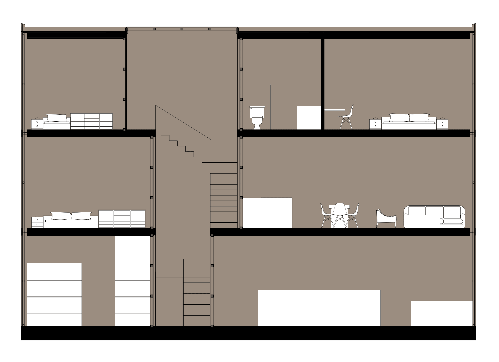
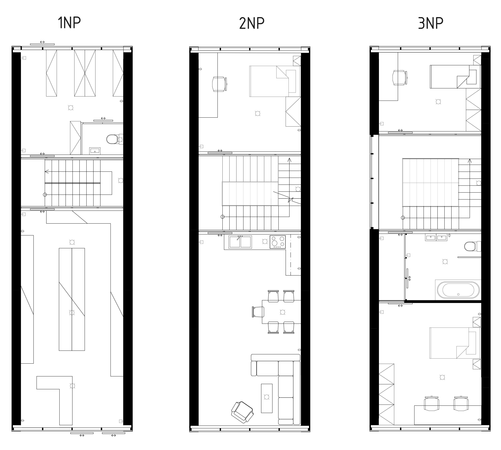
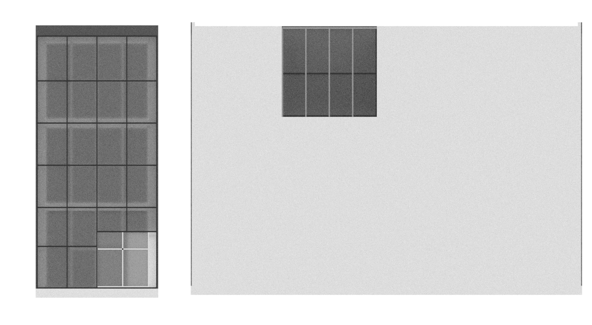
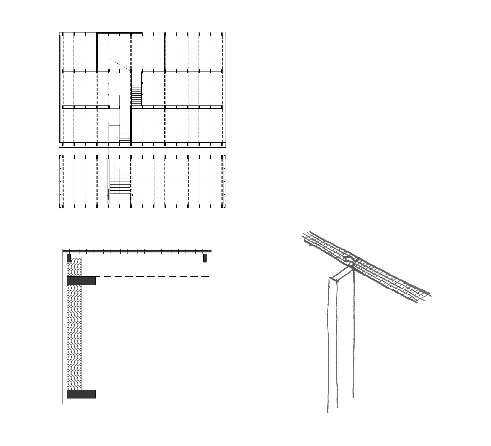
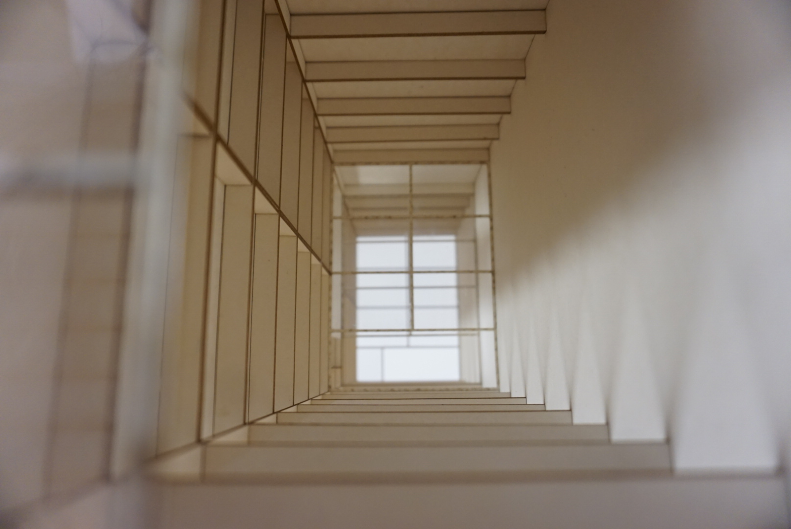
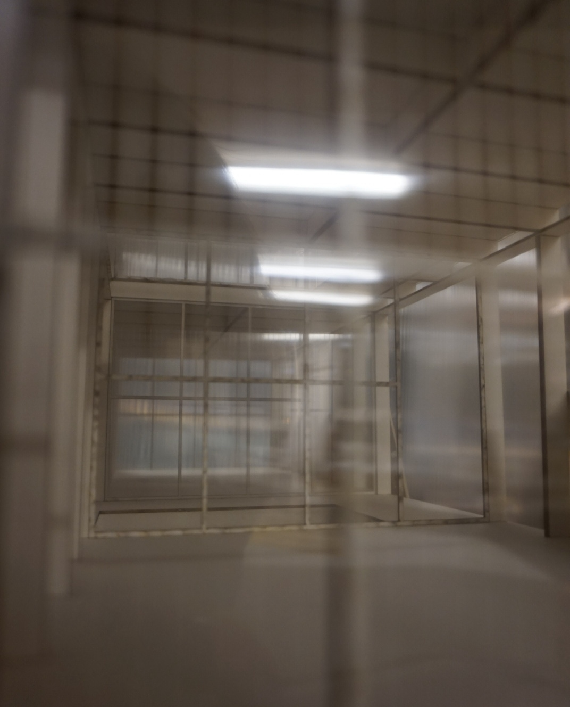

006 | 2024





2025/26
The project was developed under the guidance of Ing. arch. Marek Štěpán
I designed a house in Brno, with weight and cultural background as the main design criterion. I designed a home for an average Vietnamese family of four — two parents and two children — and included a small convenience store to reflect the cultural context of the Czech Republic.
The design is inspired by narrow Vietnamese houses in Hanoi, where the ground floor is used for business while living spaces occupy the upper floors. The building’s facade is made of polycarbonate sheets, creating a metaphor for how we perceive the community: passersby see the store, but the life behind it remains hidden, reflecting our limited understanding of the Vietnamese community in the city.
The primary materials are wood, symbolizing tradition, and polycarbonate, a lightweight alternative to glass. Using these materials ensures a light structure, ample daylighting, and reduces both the carbon footprint and construction costs, making the project environmentally and economically sustainable.

